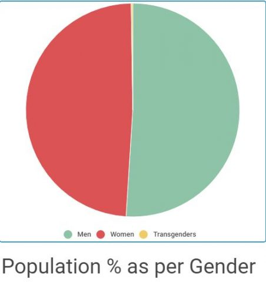
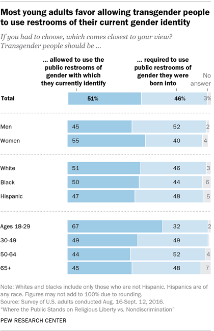

In North Carolina, the government passed a bill which mandated that a person use the bathroom of the gender assigned to them on their birth certificate. This kept people from using public restrooms in some cases because they felt uncomfortable using the bathroom because of the prejudice of some people and the perceived (and in some cases real) hate coming their way. This bill was passed on March 26, 2016 by the North Carolina governor. This was able to occur because it is a logical law and kept confusion from occuring.
Current Legislation
Grimm v. Gloucester County School Board which says that transgender students are not allowed to use the bathroom of the sex that they identify with; the California law, SB 179, makes it much easier for transgender people to obtain paperwork that identifies themselves as their self-identified gender, and this matters because it allows people to gain rights according to their gender
Statistics

Graph 1 shows that a very small number of people in this country are transgender and this matters because so much discrimination goes against a group that represents such a small segment of the population.

Graph 2 shows that over 50% percent of people believe that transgender people should be able to use the bathroom of the gender they identify with, and this matters because it shows that these bills are necessary because they represent the feeling of the majority
Broader Moral Issues
This is connected to the issue because people desire to use the bathroom of the gender which they identify with, but certain laws try to prohibit that. This brings up the idea of whether it is okay to make people go against their feelings and to control their behavior. By restricting bathroom use, it seems to be a wider indication of problems with transgender people.
The Catholic Church recognizes the difference between what they call socio-cultural role of sex versus biological sex but they emphasize that these two things are not separated. They can be differentiated but gender and biological sex cannot be separated into two completely different issues. God created Adam and Eve in the Garden of Eden, a man and a woman. God created men and women to create life and humans cannot change what God has created.
Church Documents
Caritas in Veritate:“a society lacks solid foundations when… it allows or tolerates a variety of ways in which human life is devalued and violated, especially where it is weak or marginalized.” This refers to how acting as if human beings have the ability to change our gender can devalue the life of humans because it makes us violate the beauty that God made as women and man, two beings capable of creating life.(Section 15, Paragraph 2)
Relatio Finalis: “Christianity declares that God has created humanity, male and female, and has blessed them so as to form one flesh and transmit life” God created all of creation, and he created men and women as they should be created, so our sex and gender have been given by God and are not determined by human whims or feelings.(Section 58)
Amoris Laetitia: It needs to be emphasized that “biological sex and the socio-cultural role of sex (gender) can be distinguished but not separated” Gender and sex can be recognized as different things but they are closely related. They cannot be separated as different issues even if they can be distinguished from one another.(Section 56)
Personal Beliefs
I think this teaching on the issue is fair because it recognizes that gender and biological sex can be distinguished, but they are not wholly different. As God’s creation, human beings do not have the ability to choose whether or not we are a man or a woman at any given time. We are created by God in His image so our small minds cannot comprehend what we really are, so how could we know definitively that we are something other than what we are created as. This is a fair teaching because it is not completely hard line, but it remains true to the fact that God created humans as men and women. However, this issue is very modern and has only recently come up in the last decade or so. This means that as the issue becomes more well known and developed, the Catholic teaching on the matter will surely be updated and adapted as time goes on.
Transgenders in the Military:In August of 2017 President Trump announced a ban on transgender people serving in the military. However, this was quickly overturned by the Supreme Court. On January 1, 2018, the first transgender recruits were allowed entry. Like the bathroom bill, this decision is overturned.
California Transgender Healthcare Law: In October of 2017, Governor Jerry Brown signed into law legislation that criminalizes health care providers that use the incorrect pronouns regarding senior transgender patients. This law is simply described as a scare tactic. It is also meant to ensure the accomodation of transgenders in the healthcare system. Like the overturning of the bathroom bill, this gives supposed transgender people the option to use the facilities of their prefered gender.
Media Portrayal
For a period of 2 seasons, this documentary series depicted the life of Caitlyn Jenner during and after this person’s transition. It focused on the “new normal” for Caitlyn. Society portrays this as a common practice, which is wrong because only 0.3% of the American populous identifies as transgender. This media attention puts the idea of transgenderism at the forefront of certain civil rights discussions. Society portrays it as simply just another way to live life.
Society Portrayal
Society portrays this issue in a seriously mistaken way. Although distinguishable, sex and gender are still inseparable, and are therefore both determined by chromosomes. The idea of “my body, my choice” still applies here. However, they are not entitled to protection from arguments based in basic biology. Legislation granting access to facilities of the prefered gender or pronouns is immoral because it detracts from the truth. However, they should not be discriminated against for simply being transgender. They should still be entitled to the same protections and opportunities of the average American.
For a period of 2 seasons, this documentary series depicted the life of Caitlyn Jenner during and after this person’s transition. It focused on the “new normal” for Caitlyn.
Society portrays this as a common practice, which is wrong because only 0.3% of the American populous identifies as transgender. This media attention puts the idea of transgenderism at the forefront of certain civil rights discussions. Society portrays it as simply just another way to live life.
Our group’s moral stance on this situation is that it is wrong to enforce regulations on people who have undergone surgery to change their gender. If someone has undergone surgery to change their gender, then they are open to using the bathroom of their current gender they medically are. We, as Americans, cannot discriminate against someone because of how they look or what their medical history is. We must accept people for how they are and not restrict the rights of innocent people. Our laws are in place to prohibit and moderate crime that could be committed by our citizens. Well, the Transgender Bathroom Bill restricts the rights of transgender persons who have not committed any crime themselves, therefore the law seems purposeless in its existence. We believe that if a law does not aid the economy, society, or politics of the country, then it truly has no use. Since this law has no real benefit to our society in any of these ways and only works to restrict the rights of certain peoples, then it is useless. We believe that this law should not have been instated, and that these restrictions are just extraneous use of power to deal with predisposed biases against transgender people.
Moral Reasoning Category: Utilitarian
Our reasoning is more attuned to a utilitarian point of view. Utilitarians believe that decisions and actions should be made for the greater good of society, and should not focus on objective or relative truth. We use this same moral reasoning in my determination on what laws should be in place to suit our society. We believe that laws and bills should only be issued if they benefit society and do not entail some negative aspects. Since this bill has no real positive aspects for our society, only negative connotations for transgender people, it shouldn’t be in place.
Bible Reference
“The boys grew up, and Esau became a skillful hunter, a man of the open country, while Jacob was content to stay at home among the tents.Isaac, who had a taste for wild game, loved Esau, but Rebekah loved Jacob” (Genesis 25: 27) The Bible talks about Jacob, the more effeminate and thus women-like brother, becomes the leader of God’s people, but the pure male, Esau, serves him. This might be a reference to people who are transgender since women tended to be more homely and since Jacob is a man, he is a womanly man. So, the Bible seems to support some kind of transgender or womanly man. Therefore, my evaluation seems to follow the values of the Gospel.